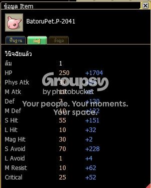

ข้อมูลในวิกิ พวกที่เปนตัวเลขสีเทา คือ ข้อมูลยังไม่ถูกต้อง 100%
อยากรู้ก็ต้องลองเทสเอาเองงิ
http://eco.froztic.in.th/archive/ecofanclub/
สงสัยเกี่ยวกับค่า Maxของกะรอกค่ะ(อับเดทภาพล่าสุด)
http://eco.froztic.in.th/archive/ecofanclub/viewtopic.php?f=25&t=57451
หน้า 1 จากทั้งหมด 2
- -. แบบนี้เท่ากับมีความเป็นไปได้ที่M.atkจะไม่อัพและ Mag Hitจะมากกว่านี้สิระT^T
ช่าย
วิกินั้นไม่ได้เกิดจากคนทำเกมมาทำข้อมูลลงในวิกิงิ เป็นการรวมกันของผู้เล่นที่ช่วยกันค้นคว้าอ่ะงิ อาจจะเกิดการอัพเดทสเตตัสแล้วเค้าไม่รุก็เป็นได้
วิกินั้นไม่ได้เกิดจากคนทำเกมมาทำข้อมูลลงในวิกิงิ เป็นการรวมกันของผู้เล่นที่ช่วยกันค้นคว้าอ่ะงิ อาจจะเกิดการอัพเดทสเตตัสแล้วเค้าไม่รุก็เป็นได้
อะโห ก็ถือเป็นการค้นพบข้อมูลเกมที่ถูกต้องกว่าในวิกิสินะครับเนี่ย
ฝีกรอบแรกขนาดนี้เลย สุดยอด!!
ฝีกรอบแรกขนาดนี้เลย สุดยอด!!
สงสัยงานนี้ต้องให้คนเลี้ยงกะรอกที่เคยฝึกเต็มทุกค่ามายืนยันเท่านั้นสินะT^T
รู้สึกว่าทุกค่ามันเต็มที่อย่างน้อย +1
ก็รอลุ้น matk มันเด้งสักรอบละกัน
ส่วนเรื่อง Mhit เต็มเท่าไร คงต้องยอมเหนื่อยเด้งทีนึง ก็ไปถามลุงทีนึงแหละ
ปล. เพิ่งสอยกระรอกมาตัว ไว้ปิดโปรเจคปั้นเด็กแล้วว่าจะไปเทรนอยู่เหมือนกัน
ก็รอลุ้น matk มันเด้งสักรอบละกัน
ส่วนเรื่อง Mhit เต็มเท่าไร คงต้องยอมเหนื่อยเด้งทีนึง ก็ไปถามลุงทีนึงแหละ
ปล. เพิ่งสอยกระรอกมาตัว ไว้ปิดโปรเจคปั้นเด็กแล้วว่าจะไปเทรนอยู่เหมือนกัน
สกิลที่กระรอกใช้ มีอะไรมั่งหว่า
แบบว่าไม่เคยเลี้ยง + อยากรู้ เผื่อมีความคิดที่จะเลี้ยงไปใ้ช้งาน
แบบว่าไม่เคยเลี้ยง + อยากรู้ เผื่อมีความคิดที่จะเลี้ยงไปใ้ช้งาน
avoid burst
โอกาสใช้ โค-ตะ-ระ น้อย
โอกาสใช้ โค-ตะ-ระ น้อย
โอกาสใช้น้อยแบบว่า เวลในดัน3ชั่วโมงร่ายสัก2ครั้งก็ดีใจแระ = =
พังพอนของเค้า ไม่อยุ่ไม่กี่วันเนียนเชียวนะ! ว่าแต่ซิกหายไปไหนนั่น
ก็รับอุปการะชั่วคราว แน -..-

ลองเอาไปถามกะปู่ God of pet ดูมั้ยคะ ว่ามัน + int กี่ตัว ถ้าครบ int แล้วก็เต็มหมดละค่ะ -w-

ตัวอย่างการดูค่าบวกนะคะ =A=
credit : ย้vยี้Jung
ตัวอย่างการดูค่าบวกนะคะ =A=
การอัพให้คุ้มค่า
อย่างที่ได้บอกไป การอัพไม่ได้เพิ่มขึ้นค่าเดียวเท่านั้น แต่มันจะเพิ่มขึ้นตาม สเตตัส ที่ได้ทำการอัพไป
การจะอัพให้คุ้มค่านั้น แนะนำให้เต็ม Max ซัก 3 4 อย่าง จะดีกว่า
ยกตัวอย่าง เช่น Pet White Wolf A
ค่า Max ATK : 80+176
ค่า Max CRITICAL : 36 +72
ค่า Max S.Hit : 70 +141
ค่า Max S.AVOID : 74 +156
ล้ม 1
ค่า ที่นำไปอัพ จะได้ Str+1 Agi +1 Dex +2
งงม่ะ จะเฉลยให้ฟัง
Max CRITICAL: 36 +72 ( Dex+1 )
Max S.Hit : 70 +141( Dex+1)
Max ATK: 80 +176 ( Str+1 )
Max S.AVOID: 74 +156( Agi+1)
พอนำมารวมกันจึงได้ Str +1 Agi +1 Dex +2
สรุป คือการ ที่จะนำ Pet ไป ล้มนั้นควร ให้ Max ซัก 2 - 3 ค่าจะดีกว่า เพราะมันจะเสียแต้มล้ม แค่ 1 แต่ได้ สเตตัสคุ้มค่ากว่า
credit : ย้vยี้Jung
รู้สึกว่าครั้งแรกที่ผมล้มไปจะ +1 แล้วพอล้มไปแล้วตัวเลขที่บวกอยู่ข้างหลังก็หายไปครับ
ยืนยันครับว่า MATK +1 ครับผม
Ps, พอล้มเสร็จได้ MATK ด้านหลัง +4 ฝึกต่อไปเรื่อยดันไปถึงเป็น +6 งงดีเหมือนกัน = = แถมเหมือนจะยังไม่เต็มด้วย
ส่วน Mag Hit กระรอกไม่มี Mag Hit นะครับ (ถ้ามีก็คือล้มแล้วเท่านั้น)
ส่วนอันนี้ stat กระรอกปัจจุบันนะครับ (พอดีล้มไปแล้วทีนึงนะครับ ดูเอาจากที่พิมพ์ข้างล่างนะครับ ^^")
HP +1700
ATK +61
MATK +1
DEF +128
MDEF +120
S.Hit +149
L.Hit +31
Mag Hit +0
S Avoid +225
L Avoid +1
M.RST +60
Critical +50
stat นี้คอนเฟิร์มครับว่าเต็ม เพราะว่าผมก็ฝึกได้เท่านี้และเอาเพ็ทไปล้มครับ :yoyo79:
แต่หลังจากล้มไปแล้ว ไม่รู้แล้วนะครับ = =" เพราะตอนนี้สับสนเหมือนกัน
ยืนยันครับว่า MATK +1 ครับผม
Ps, พอล้มเสร็จได้ MATK ด้านหลัง +4 ฝึกต่อไปเรื่อยดันไปถึงเป็น +6 งงดีเหมือนกัน = = แถมเหมือนจะยังไม่เต็มด้วย
ส่วน Mag Hit กระรอกไม่มี Mag Hit นะครับ (ถ้ามีก็คือล้มแล้วเท่านั้น)
ส่วนอันนี้ stat กระรอกปัจจุบันนะครับ (พอดีล้มไปแล้วทีนึงนะครับ ดูเอาจากที่พิมพ์ข้างล่างนะครับ ^^")


HP +1700
ATK +61
MATK +1
DEF +128
MDEF +120
S.Hit +149
L.Hit +31
Mag Hit +0
S Avoid +225
L Avoid +1
M.RST +60
Critical +50
stat นี้คอนเฟิร์มครับว่าเต็ม เพราะว่าผมก็ฝึกได้เท่านี้และเอาเพ็ทไปล้มครับ :yoyo79:
แต่หลังจากล้มไปแล้ว ไม่รู้แล้วนะครับ = =" เพราะตอนนี้สับสนเหมือนกัน